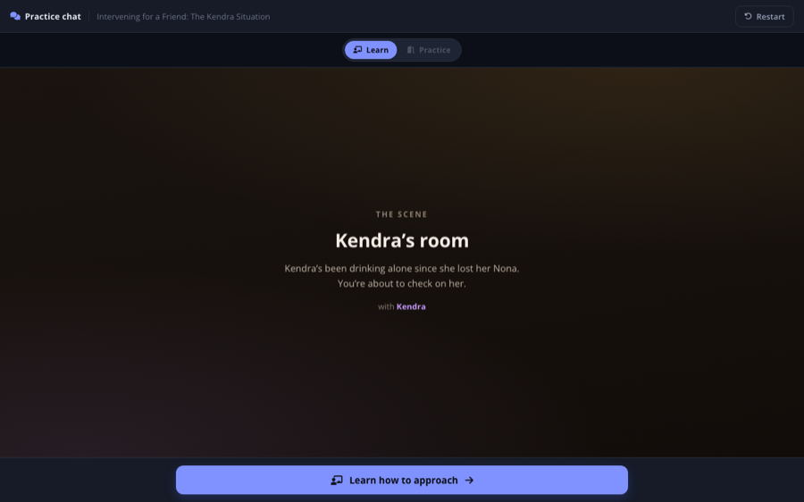
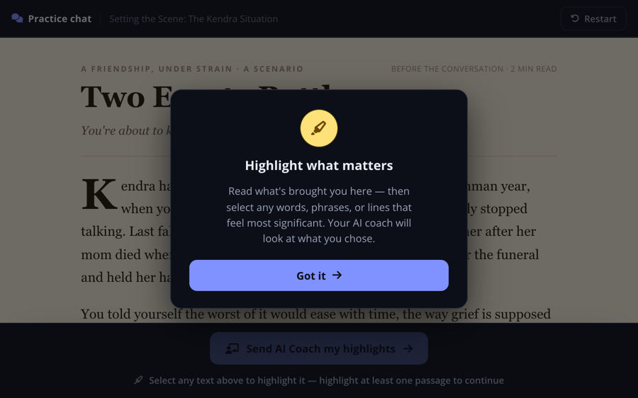
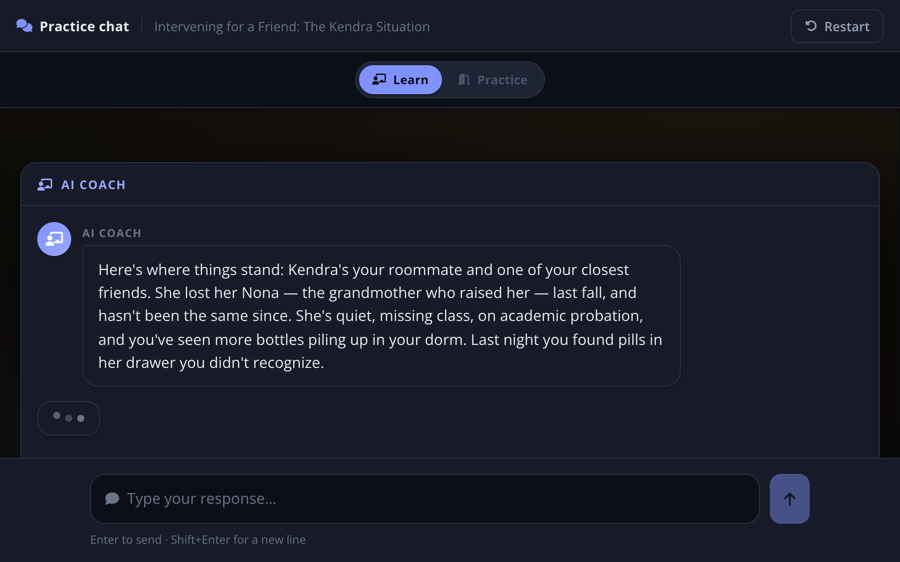

Lesson Presentation Experiments
New ways to present lesson content and check understanding — each one still fits inside the same lesson experience learners already know.
Experiments marked Live AI can also be launched on a real model (Claude) instead of the scripted demo engine — look for the launch option in the experiment's details.
Conversation Simulation
Same AI conversation-practice scene, three different ways into it-

Live AI With video Intro The learner practices a hard real-life conversation — checking in on a friend, Kendra, who's showing signs of a drinking problem. A short video sets the emotional scene, then an AI coach preps the learner before each line and reacts afterward, while an AI-played Kendra responds in character. The learner can always retry a line that didn't land, and the practice isn't considered a success until they take the one action that matters: connecting Kendra to real help. Same scene, same flow — but the coach and Kendra are played by a real LLM (Claude) through a Cloudflare Worker proxy instead of the scripted demo engine. The conversation is real, so the coach reacts to what the learner actually says, and off-script input (garbage text, curveballs, tough questions) gets a real response. -

Live AI With story intro The same Kendra conversation practice, but the scene is set with a short story instead of a video: the learner reads Kendra's backstory and highlights whatever stands out to them, like highlighting a printed page. The AI coach then reacts to what the learner did (and didn't) notice before the practice conversation begins. The story-intro variant hooked to a real LLM and the Writer Studio: the story the learner reads, the key-moments answer key, and everything about the conversation are writer-authored scenario content — and the coach's opening reaction to what the learner highlighted (and missed) is generated live by Claude, judged against the writer's answer key. -

No intro The same Kendra conversation practice with no video or reading activity to set the scene at all: the learner lands straight on the establishing card, and the AI coach's opening prep carries the backstory as part of the normal coaching beat. Straight into Learn/Practice mode and the closing summary, with nothing to sit through first.
Writer Studio — the authoring tool behind these practices. Content writers fill structured, plain-language fields (the scenario, assessment dimensions, the character's reaction map, the success gate) and publish straight to the Live AI variants above. New to it? Learn more ›
Bystander Intervention
The same Live-AI coaching engine, a different arc — a harassment scenario built from Content Design's learning objectTeach-Back
Basic-interaction shell meets the AI simulator — the learner teaches the course backScene Analysis Simulation
Same coach-in-a-bottom-sheet module, with the conversation replaced by a scene to readVideo Reflection
Same post-video reflection, presented two ways — compared side by side-
 Video Reflection A
After the training video ends, the learner reflects on it in a short written conversation with an AI: it asks the lesson question, responds to their answer, asks once for more detail if needed, then unlocks Continue once the answer is thorough enough.
Video Reflection A
After the training video ends, the learner reflects on it in a short written conversation with an AI: it asks the lesson question, responds to their answer, asks once for more detail if needed, then unlocks Continue once the answer is thorough enough.
-
 Video Reflection B
The same after-video reflection question, shown two different ways for comparison: one pauses the screen with a pop-up the learner must answer before continuing, the other is a small AI assistant that sits beside the still-playing video and can be opened or tucked away. The reflection itself is identical — only the presentation changes.
Video Reflection B
The same after-video reflection question, shown two different ways for comparison: one pauses the screen with a pop-up the learner must answer before continuing, the other is a small AI assistant that sits beside the still-playing video and can be opened or tucked away. The reflection itself is identical — only the presentation changes.
Basic Interactions
Distinct lesson content types-
 Terms to Remember
A single key term and its definition on a flip card, with an AI assistant on hand if the learner wants to go deeper.
Terms to Remember
A single key term and its definition on a flip card, with an AI assistant on hand if the learner wants to go deeper.
-
 Quick Question
One question at a time with large, easy-to-tap answer choices, plus an optional “tell me more” for extra context.
Quick Question
One question at a time with large, easy-to-tap answer choices, plus an optional “tell me more” for extra context.
-
 Peer Results
A “how do you compare?” moment: the learner answers a couple of quick questions, then sees how their answers stack up against their peers on a simple chart, with a plain-language verdict like “better than most.”
Peer Results
A “how do you compare?” moment: the learner answers a couple of quick questions, then sees how their answers stack up against their peers on a simple chart, with a plain-language verdict like “better than most.”
-
 Conversation Step-In
The learner reads a realistic text conversation, then takes it over partway through — practicing how to turn down a party invite gracefully, without losing the friendship, while a peer (Jordan) responds in character. Wraps up with three simple takeaways.
Conversation Step-In
The learner reads a realistic text conversation, then takes it over partway through — practicing how to turn down a party invite gracefully, without losing the friendship, while a peer (Jordan) responds in character. Wraps up with three simple takeaways.
-
 Matrix Card Sort
A more engaging way to run a pre-course survey: instead of rating a long list of items in a grid, the learner sorts each one into “not important,” “somewhat important,” or “very important” by dragging or tapping. Includes a side-by-side comparison against the traditional grid version it replaces.
Matrix Card Sort
A more engaging way to run a pre-course survey: instead of rating a long list of items in a grid, the learner sorts each one into “not important,” “somewhat important,” or “very important” by dragging or tapping. Includes a side-by-side comparison against the traditional grid version it replaces.
-
 Audio Summary
Replaces a narrated slide video with just the words on screen: the learner's device reads the text aloud and highlights each word as it's spoken. No video production needed to update the narration — just edit the text.
Audio Summary
Replaces a narrated slide video with just the words on screen: the learner's device reads the text aloud and highlights each word as it's spoken. No video production needed to update the narration — just edit the text.
-
 Confidence Check
A lesson wrap-up where an AI coach asks the learner to rate their confidence with a simple slider, then reacts to their answer and asks two quick follow-up questions — their preferred training format, and the one thing they'd tell a coworker — before unlocking Continue.
Confidence Check
A lesson wrap-up where an AI coach asks the learner to rate their confidence with a simple slider, then reacts to their answer and asks two quick follow-up questions — their preferred training format, and the one thing they'd tell a coworker — before unlocking Continue.
-
 Personalized FAQ
A traditional FAQ accordion that's quietly rewritten for the learner in front of it — questions and answers reference their actual school and state. Opening a question first asks for the learner's own guess, then "personalizes" the real answer around what they said. The last item flips the direction: the learner asks a question of their own and gets an answer built for them.
Personalized FAQ
A traditional FAQ accordion that's quietly rewritten for the learner in front of it — questions and answers reference their actual school and state. Opening a question first asks for the learner's own guess, then "personalizes" the real answer around what they said. The last item flips the direction: the learner asks a question of their own and gets an answer built for them.